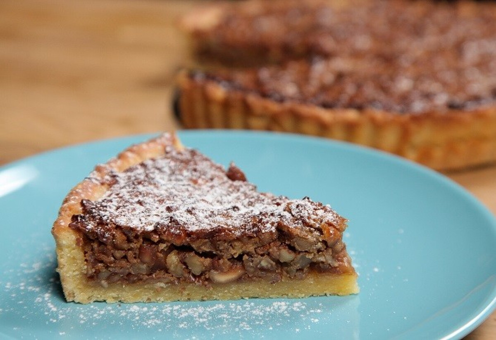
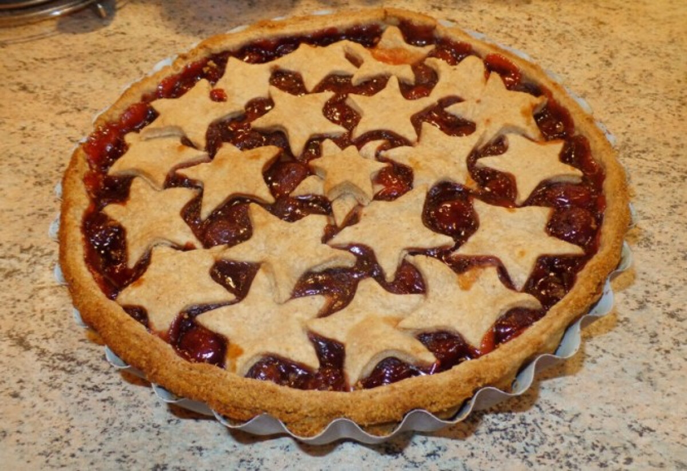

Hozzávalók:
- 25 dkg liszt
- 10 dkg vaj
- 5 dkg cukor
- 2 evőkanál méz
- 1 tojás
- 1 teáskanál fahéj
- 1 teáskanál szódabikarbóna
- Csipet só
Elkészítés:
- A vajat és a cukrot keverd habosra egy tálban.
- Add hozzá a mézet és a tojást, majd keverd simára.
- A lisztet, fahéjat, szódabikarbónát és csipet sót szitáld hozzá, majd gyúrd össze tésztává.
- Nyújtsd ki a tésztát, és helyezd sütőpapírral bélelt tepsire.
- Süsd 180°C-on kb. 15-20 percig, amíg aranybarna lesz.
- Hagyd kihűlni, majd tetszés szerint díszítheted cukormázzal vagy porcukorral.

Tipp:
A pite másnap még finomabb, érdemes előre elkészíteni. Fahéjas ízesítésével igazi karácsonyi hangulatot varázsol az asztalra.